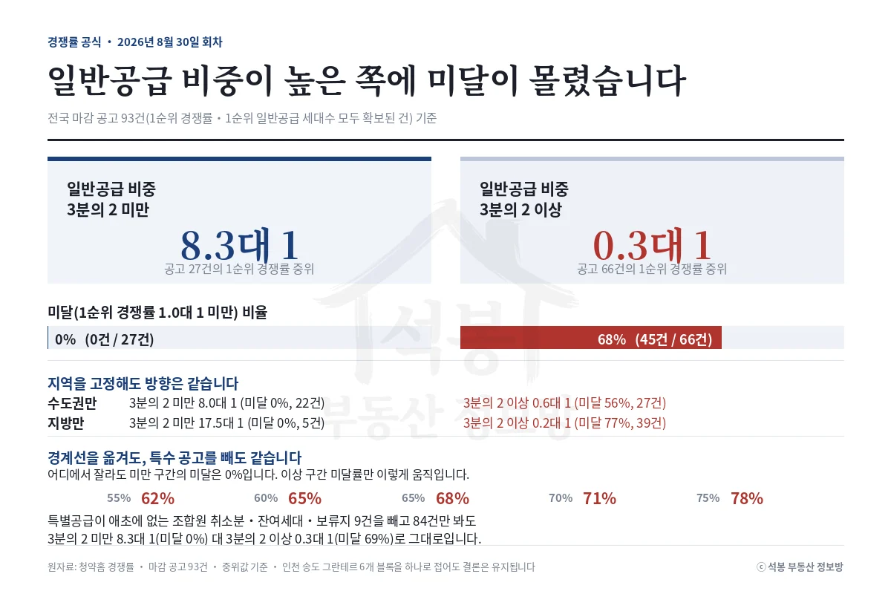

2026년 8월 24일부터 30일까지 여덟 곳이 접수를 마쳤고, 그중 일곱 곳의 1순위 경쟁률이 나왔습니다. 39.7대 1부터 0.2대 1까지 벌어졌는데, 그 순서를 가장 정확하게 예고한 숫자는 분양가도 지역도 아니었습니다. 8월 31일 월요일에는 세 곳이 문을 엽니다.
8월 24일~30일 성적표: 서울 한 곳, 경기 세 곳, 지방 세 곳
여기서 말하는 1순위 경쟁률은 1순위 접수 건수를 1순위 일반공급 세대수로 나눈 값입니다. 2순위와 특별공급은 들어가지 않습니다. 같은 기간 마감한 곳은 여덟 곳인데, 시흥거모 A-5 신혼희망타운은 경쟁률이 아직 공개되지 않아 뺐습니다. 그 단지 발표는 9월 2일입니다.
가장 센 곳은 서울 서대문구 홍은동 쌍용 더 플래티넘 서대문이었습니다. 일반공급 28세대에 1,112건이 들어와 39.7대 1입니다. 반대쪽 끝은 전주 아르티엠 라 테라스로, 290세대를 열었는데 64건이 접수돼 0.2대 1에 그쳤습니다.
위 그림의 오른쪽 막대를 봐 주세요. 총 세대 가운데 1순위 일반공급이 차지하는 비중입니다. 마감한 세 곳은 45~48%였고, 미달한 세 곳은 83% 이상이었습니다. 경쟁률 순서와 이 비중의 순서가 거의 그대로 포개집니다.
이 숫자가 부푸는 경로는 둘입니다. 흔한 쪽은 특별공급이 남아 그 물량이 1순위 일반공급으로 넘어오는 경우입니다. 부천 상동 롯데캐슬 시그니처는 공고상 일반공급이 1,044세대였는데 특별공급 815세대 가운데 562세대가 남아 넘어오면서 1,606세대가 됐습니다.
다른 쪽은 조합원 취소분이나 잔여세대처럼 특별공급이 애초에 없는 공고입니다. 이 경우 비중이 처음부터 100%입니다. 원인은 다르지만 독자가 마주하는 결과는 같습니다. 가점으로 다투는 물량이 통째로 1순위에 나옵니다.
2026년 8월 23일 브리핑에서 특별공급 소진율로 짚었던 그 구조입니다. 이번 회차(2026년 8월 30일)에는 마감 공고 전수로 다시 세어 봤습니다.
여기서부터는 회원에게 보여드립니다
카카오 로그인 3초면 전문을 읽을 수 있습니다. 무료입니다.
가입하시면 지역 시장조사 보고서(약식)를 2회 무료로 요청하실 수 있습니다.
이미 회원이면 같은 버튼으로 로그인만 됩니다
경쟁률 공식: 어디에서 잘라도 갈립니다
1순위 경쟁률과 1순위 일반공급 세대수가 모두 확보된 마감 공고 93건을 일반공급 비중으로 갈랐습니다. 3분의 2(약 65%)를 기준으로 나누면 미만 27건은 1순위 경쟁률 중위 8.3대 1에 미달이 한 곳도 없었고, 이상 66건은 중위 0.3대 1에 45곳(68%)이 미달했습니다.

3분의 2라는 숫자가 특별한 것은 아닙니다. 55%에서 잘라도, 75%에서 잘라도 미만 구간의 미달률은 0%였습니다. 경계를 어디에 두느냐가 아니라 비중이 높은 쪽에 미달이 몰려 있다는 것이 요지입니다.
구간마다 어느 지역이 들어 있는지도 세어 봤습니다. 3분의 2 미만 27건 중 서울이 10건이라 지역 효과가 섞여 있었습니다. 그래서 지역을 고정하고 다시 갈랐습니다. 수도권만 보면 8.0대 1(미달 0%) 대 0.6대 1(미달 56%), 지방만 보면 17.5대 1(미달 0%) 대 0.2대 1(미달 77%)로 방향이 그대로였습니다.
한 사업지 쏠림과 특수 공고도 걷어냈습니다. 중간 구간에 몰려 있던 인천 송도 그란테르 6개 블록을 하나로 접으면 3분의 2 이상 구간이 0.2대 1에 미달 74%로 오히려 더 벌어집니다. 조합원 취소분·잔여세대·보류지 9건을 빼고 84건만 봐도 결론은 같았습니다.
실전에서 쓰는 방법은 이렇습니다. 특별공급 접수가 끝난 다음 날, 청약홈에서 그 단지의 1순위 공급 세대수를 공고문 숫자와 맞춰 보세요. 늘어 있으면 특별공급이 남았다는 뜻입니다.
체크 5가지를 8월 24일~30일 일곱 곳에 대봤습니다
이번 회차에서 결과를 실제로 가른 것은 ④ 물량 성격이었습니다. 일반공급 비중 83% 이상이던 세 곳이 그대로 미달했습니다. 반대로 ① 시세 갭은 이번에 거의 힘을 쓰지 못했습니다. 상동역이 동네 시세보다 163% 위, 진주가 83% 위인데 결과는 정반대로 나왔습니다.
②가 왜 중요한지는 서대문구 홍은동이 잘 보여 줍니다. 쌍용 더 플래티넘 서대문 분양가는 홍은동 전체 중위와 대면 59.9% 위인데, 홍은동 신축끼리 맞추면 오히려 2.3% 아래입니다. 어느 쪽을 골랐느냐로 결론이 뒤집힙니다.
③ 지역 리그는 바닥을 정합니다. 3분의 2 미만 구간의 서울 10건은 전부 1순위에서 마감했습니다. ⑤ 자격 조건은 공공분양과 신혼희망타운에서 특히 중요합니다. 소득·자산 요건이 따로 걸려서, 가점이 아니라 자격에서 갈립니다.
다음 주 청약 캘린더(8월 31일~9월 6일)
8월 31일에 세 곳이 열리지만 단계가 다릅니다. 시티오씨엘 9단지와 검암역 푸르지오는 그날이 특별공급이고 1순위는 9월 1일 하루뿐입니다. 성남복정2 A1만 8월 31일이 1순위이고 9월 4일까지 받습니다. 날짜를 헷갈리지 마세요.
9월 1일 화요일에는 8월 26일에 마감한 다섯 곳(상동역 롯데캐슬 시그니처, 포레나힐스테이트 진주, 제일풍경채 첨단3지구, 오남역 서희스타힐스 1단지, 아르티엠 라 테라스)의 당첨자가 발표됩니다. 9월 2일 수요일에는 인천 두 곳이 2순위로 접수를 마치고, 쌍용 더 플래티넘 서대문과 의왕역 한신더휴, 시흥거모 A-5 신혼희망타운 결과가 나옵니다.
9월 3일부터 6일까지는 일반 아파트 청약 일정이 없습니다. 성남복정2의 2순위가 9월 7일~8일에 이어집니다. 같은 기간 무순위 아홉 곳은 8월 29일 글에서 따로 정리했습니다.
인천 두 곳의 분양가는 8월 28일 글에서 실거래와 맞대 봤습니다. 시티오씨엘 9단지는 학익동 신축보다 13.9% 위였습니다.
다음 주 주목 단지: 성남 신흥동 신혼희망타운
성남복정2 A1블록 신혼희망타운이 8월 31일부터 1순위 접수를 받습니다. 전용 55~56㎡대(약 16.9평)에 7억 9,831만원부터 8억 1,214만원입니다. 8호선 산성역 생활권이고, 2030년 5월 입주 예정입니다.
같은 수정구 신흥동에서 산성역포레스티아 전용 59.84㎡(18.1평)는 8월 8일에 14억 5,000만원에 팔렸습니다. 1990년 준공된 한신 60.48㎡(18.3평)는 7월 27일 8억원이었습니다. 분양가가 그 둘 사이 어디에 놓이는지, 무엇과 비교하느냐로 답이 어떻게 달라지는지 따로 정리한 글을 함께 올렸습니다.
자료: 청약홈 입주자모집공고·주택형별 공급정보·1순위 경쟁률, 국토교통부 아파트 매매 실거래(해제 제외). 기준일 2026년 8월 30일.
집계 대상은 2026년 8월 24일~30일 마감 8곳 중 경쟁률이 확정된 7곳과, 1순위 경쟁률·1순위 일반공급 세대수가 모두 확보된 마감 공고 93곳입니다. 일반공급 비중 = 1순위 일반공급 세대수 ÷ 공고 총 공급세대.
분양가는 주택형별 분양 최고금액 기준이고 면적·단가는 전용면적 기준이며, 시세는 최근 6개월 중위 실거래입니다.
93곳에는 특별공급이 없는 조합원 취소분·잔여세대 9곳이 섞여 있는데, 빼고 세어도 결론은 같았습니다. 투자 권유가 아닙니다.
![[주간 청약 브리핑] 8월 24~30일 결과, 일반공급 비중을 봤습니다](../글이미지/20260830/브리핑_성적표.webp)
![[주간 청약 브리핑] 8월 24~30일 결과, 일반공급 비중을 봤습니다](../글이미지/20260830/브리핑_체크5.webp)
![[주간 청약 브리핑] 8월 24~30일 결과, 일반공급 비중을 봤습니다](../글이미지/20260830/브리핑_다음주캘린더.webp)